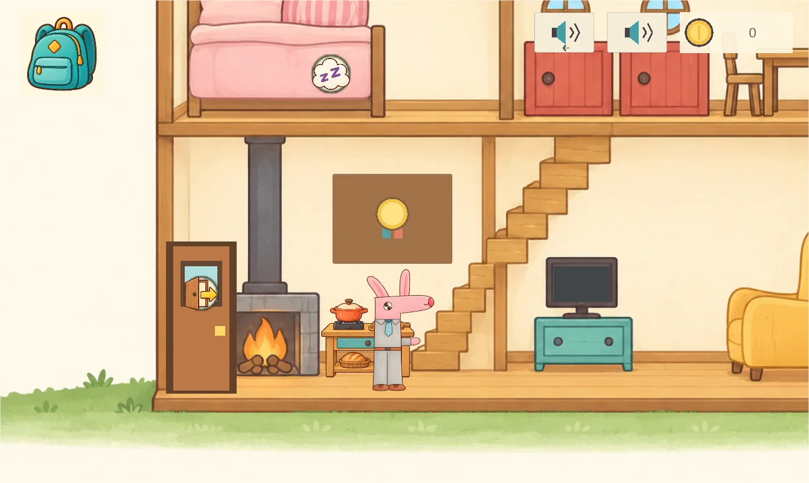
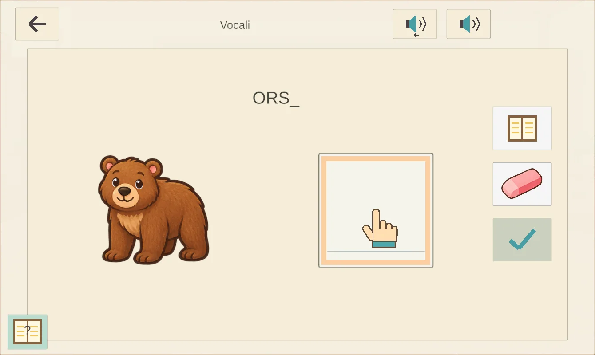

Ascoltare e leggere
Vocali, suoni delle lettere, sillabe, parole e brevi consegne. Esercizi piccoli e variati accompagnano i primi passi nella lettura.
Un piccolo mondo da esplorare
Mr Rabbit è un gioco educativo illustrato in italiano per bambini di 6–8 anni su tablet Android. Si impara a leggere, scrivere e fare i primi conti, un piccolo passo alla volta.
In sviluppo · Non ancora disponibile su Google Play

Imparare, con i propri tempi
Il gioco segue il programma scolastico italiano della prima elementare, con la scuola come fulcro dell’esperienza e dell’avanzamento. Le attività attuali riguardano competenze selezionate di italiano e matematica: il gioco non copre ancora tutte le materie e tutti gli obiettivi del programma.
Vocali, suoni delle lettere, sillabe, parole e brevi consegne. Esercizi piccoli e variati accompagnano i primi passi nella lettura.
Il bambino disegna lettere e numeri sullo schermo. Il riconoscimento funziona sul dispositivo, senza inviare i tratti a servizi online.
Conteggio, sequenze numeriche e addizioni. Pratica e brevi verifiche aiutano a conquistare medaglie e ricompense. Le sottrazioni sono escluse.

Dopo la scuola
Scegli Mr Rabbit o Miss Rabbit. Le medaglie conquistate a scuola sbloccano ricompense per la casa, l’orto e la città: il mondo sostiene l’apprendimento.
Una voce italiana calma, disegni riconoscibili e indicazioni animate aiutano a orientarsi. La guida si può riascoltare, mettere in pausa o saltare.
Cucinare, riposare e appendere le medaglie conquistate.
Seminare, annaffiare e raccogliere nuove colture.
Consegnare i raccolti, guadagnare monete di gioco e scegliere vestiti.
Per i genitori
Per bambini di 6–8 anni che affrontano i primi apprendimenti della scuola primaria italiana. Il percorso propone attività selezionate, con prerequisiti e progressione al ritmo del bambino.
Sì. Gioco, voce italiana e riconoscimento della scrittura funzionano offline. I progressi restano sul dispositivo; non servono account o microfono. Leggi l’informativa sulla privacy per i dettagli sul trattamento dei dati da parte del gioco.
La distribuzione prevista è gratuita, senza pubblicità né acquisti con denaro reale. Le monete del gioco si guadagnano giocando. Non sono previsti servizi di analisi del comportamento o profilazione.
Non ancora. Il codice sorgente e i materiali di preparazione sono pubblici, mentre l’iter di pubblicazione deve essere completato. Gli sviluppatori possono aprire il progetto con Unity seguendo le istruzioni del repository.
Sì. Il codice, la documentazione e i contenuti originali del progetto sono disponibili con licenza MIT: puoi usarli, modificarli e ridistribuirli anche per scopi commerciali, conservando copyright e licenza. Unity e i materiali di terzi mantengono le proprie condizioni; la guida alle risorse descrive anche la provenienza e le condizioni della narrazione.